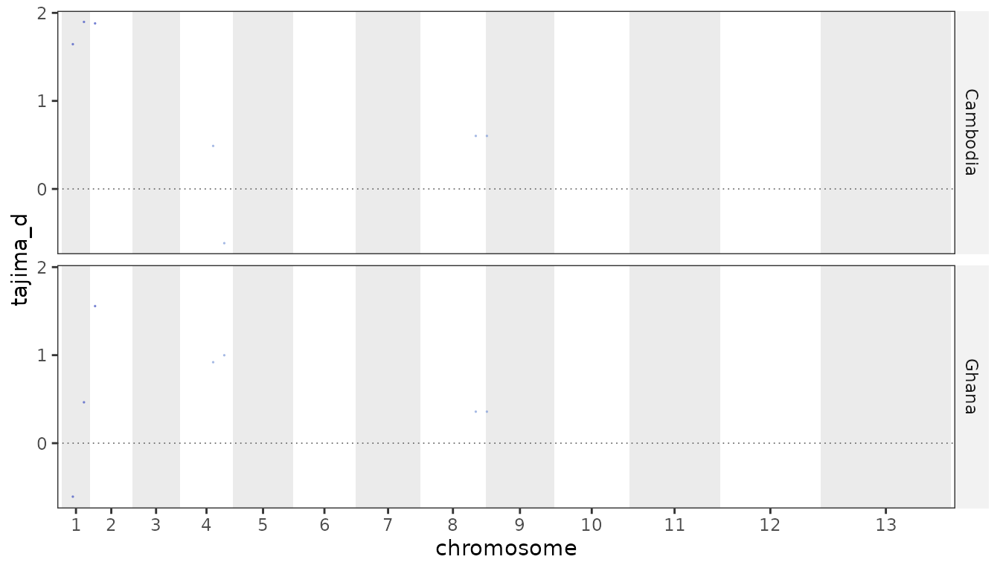
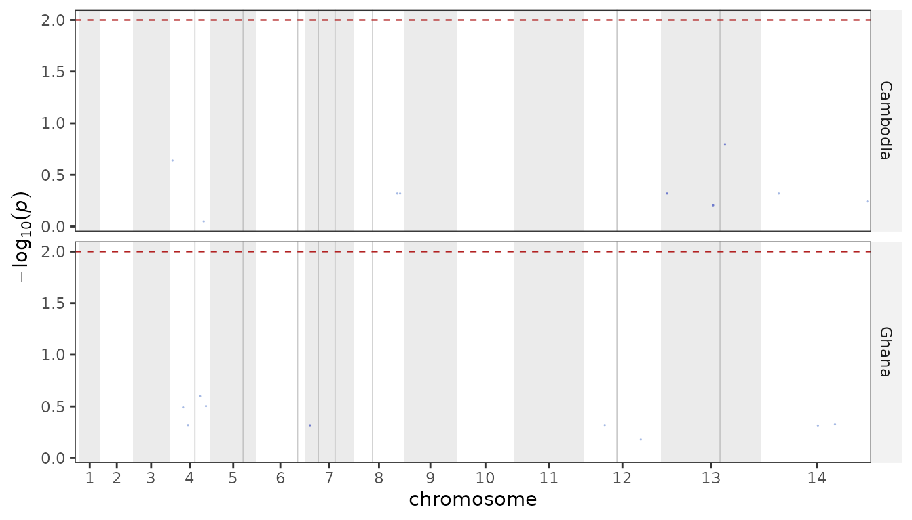
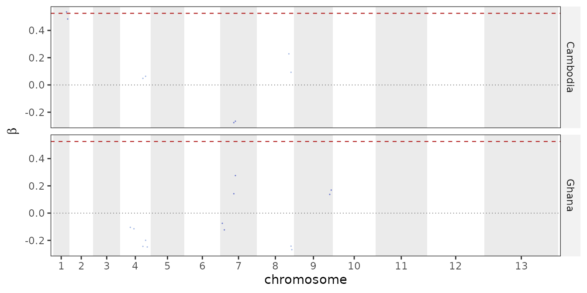

Diversity, linkage and selection
Source:vignettes/diversity-and-selection.Rmd
diversity-and-selection.RmdThree questions about a cohort, each answered from the same genotype matrix and the same metadata grouping: how diverse is each population, how far does linkage reach, and which loci are under selection.
The example fixture is deliberately tiny (60 samples, 49 SNPs), so the numbers below are shaped by that, not by biology. Everything scales to a real callset unchanged.
ps <- example_pop_structure(umap = FALSE)Diversity
pop_diversity() reports, per group: nucleotide
diversity, expected heterozygosity, Watterson’s theta, Tajima’s D, and
the haplotype / multilocus-genotype summaries.
pop_diversity(ps, group = "country", accessible = PF3D7_CORE_REGIONS)
#> # A tibble: 2 × 24
#> group chr start end unit n_samples n_snps n_sites seg_sites he pi
#> <fct> <chr> <dbl> <dbl> <chr> <int> <int> <dbl> <int> <dbl> <dbl>
#> 1 Camb… NA NA NA geno… 30 49 2.09e7 24 0.159 3.74e-7
#> 2 Ghana NA NA NA geno… 30 49 2.09e7 36 0.194 4.56e-7
#> # ℹ 13 more variables: theta_w <dbl>, tajima_d <dbl>, tajima_p <dbl>,
#> # n_taj_snps <int>, n_taj_samples <dbl>, n_hap_snps <int>,
#> # n_hap_samples <int>, n_hap <int>, hap_div <dbl>, shannon_h <dbl>,
#> # simpson_lambda <dbl>, evenness <dbl>, tajima_percentile <dbl>pi and He are not the same number
This is the one thing worth being careful about.
pi is per accessible base pair – the sum
of per-site heterozygosity divided by the number of callable sites.
he is that same per-site quantity averaged
over the SNPs. They differ by a factor of several
thousand and only one of them is comparable between windows:
d <- pop_diversity(ps, group = "country", accessible = PF3D7_CORE_REGIONS)
d[c("group", "n_snps", "n_sites", "he", "pi")]
#> # A tibble: 2 × 5
#> group n_snps n_sites he pi
#> <fct> <int> <dbl> <dbl> <dbl>
#> 1 Cambodia 49 20857252 0.159 0.000000374
#> 2 Ghana 49 20857252 0.194 0.000000456Dividing by the SNP count instead of the base count is the usual
mistake, and it makes windows with different SNP density or missingness
silently incomparable. accessible sets the denominator;
without it every base of the unit is assumed callable, which is only
right if your VCF really was called across the whole span.
Per gene, or in windows
Per gene is the convention for P. falciparum Tajima’s D – coding SNPs, at least three of them, no MAF filter:
pop_diversity(ps, group = "country", by = "gene",
genes = PF_EXAMPLE_DRUG_GENES)[1:4, c("group", "unit", "n_snps", "he")]
#> # A tibble: 4 × 4
#> group unit n_snps he
#> <fct> <chr> <int> <dbl>
#> 1 Cambodia pfcrt 0 NA
#> 2 Cambodia pfdhfr 0 NA
#> 3 Cambodia pfmdr1 0 NA
#> 4 Cambodia pfdhps 0 NAWindows give a genome-wide track. step slides the window
rather than tiling it, which is the usual way to scan Tajima’s D — a
fixed grid can split a signal across two windows and dilute it in
both:
win <- pop_diversity(ps, group = "country", by = "window", window = 500000, step = 250000)
plot_diversity(win, metric = "tajima_d")
On a real callset window = 5000, step = 2500 is a
reasonable scanning resolution. Overlapping windows are not independent,
so count peaks, not windows — [selection_peaks()] does
that.
tajima_p tests each unit against the standard neutral
model, and tajima_percentile places its D within the
group’s own distribution. Prefer the percentile for shortlisting: see
?tajima_d_pvalue for why the parametric test is
conservative here.
Haploid genotypes, mixed infections
The parasite is haploid, so a heterozygous call is a mixed infection
at that site rather than a diploid genotype. By default those calls are
dropped at that site (het = "missing") and every allele
count is a count of samples; het = "dosage" splits the call
between the two alleles instead.
Tajima’s D needs one sample count for its variance term, but sites
differ in how many calls they have. Rather than discard every sample
with a gap, all sites are kept and the mean number of calls is used as
n – n_taj_snps and n_taj_samples
report what went in. The haplotype-based columns (hap_div,
shannon_h, simpson_lambda) do need complete
data, and there something has to give: either the samples with a gap or
the sites. Sites are the plentiful axis, so the sites with any missing
call are dropped and every sample stays in the comparison
(n_hap_snps reports what survived). Dropping samples
instead would be hopeless at scale — at 0.05% missingness over 27,000
SNPs a sample survives with probability ~1e-6.
Note that haplotype diversity is a per-locus statistic:
genome-wide it saturates at 1, because over thousands of SNPs every
sample is its own haplotype. Use by = "gene" or
by = "window" for it to say anything.
Linkage disequilibrium
Two views, and they live on different sides of the split.
r-squared decay with physical distance is the one
genuinely quadratic statistic here – every SNP against every other SNP
within max_dist – so it runs in the Python package, where
it takes about 7 seconds on a 249-sample, 28k-SNP callset:
plasgenomicsutils ld_decay --vcf cohort.bcf --meta meta.tsv --group-col region \
--max-dist 50000 --bins 20 --output ld/decay.tsv.gz --half-decay-output ld/half.tsvread_ld_decay() brings it back, with the half-decay
distance and the scan settings attached so the thinning behind a curve
travels with it:
ld <- read_ld_decay("ld/decay.tsv.gz", "ld/half.tsv")
attr(ld, "ld_half_decay")
plot_ld_decay(ld)ld_index() is the multilocus view and
stays here, being linear and quick: Ia and its standardised
form rbarD, both 0 under free recombination and rising as
reproduction becomes clonal. Compare rbarD between
datasets, since Ia grows with the number of loci.
ld_index(ps, group = "country")
#> # A tibble: 2 × 5
#> group n_samples n_loci ia rbar_d
#> <fct> <int> <int> <dbl> <dbl>
#> 1 Cambodia 30 14 0.887 0.0704
#> 2 Ghana 30 25 -0.0422 -0.00184Both are upward-biased in small samples, so read
them next to n_samples – a group of ten will score above a
group of a hundred drawn from the same population.
Selection
Two complementary scans. Directional sweeps (drug resistance) show up in extended haplotype homozygosity; long-term balancing selection (antigens) shows up in clustered allele frequencies.
Haplotypes first
needs phased haplotypes with no missing calls, and a P.
falciparum VCF has neither. parasite_haplotypes() is
the bridge, and it reports every sample and SNP it removed – how the
haplotypes were made determines what the scan can honestly claim.
hap <- parasite_haplotypes(ps, maf = 0.05)
hap
#> <parasite_haplotypes> 60 haplotypes x 27 SNPs
#> from : 60 samples x 49 SNPs
#> mixed calls : 79 resolved by allele draw
#> SNPs dropped : 12 missing, 10 MAF
#> samples dropped : 0 missing
#> imputed calls : 16 seed: 42With per-sample Fws to hand (from
plasgenomicsutils calculate_fws), gate to monoclonal
infections first, since a polyclonal infection is a mixture of
haplotypes rather than one:
fws <- readr::read_tsv("fws.tsv")
hap <- parasite_haplotypes(ps, fws = fws, min_fws = 0.95, maf = 0.03)Both the mixed-call resolution and the imputation are random draws at
the population allele frequency. seed makes a run
reproducible – and a signal worth reporting should survive repeating the
whole thing under a different seed.
iHS, Rsb and XP-EHH
ihs <- run_ihs(hap, group = "country")
#> Warning: If alleles are unpolarized, 'freqbin' should be set to 1 (one bin).
#> Warning in rehh::ihh2ihs(scan, freqbin = freqbin, min_maf = min_maf, verbose =
#> FALSE): The number of markers with allele frequencies in bin [0.05,0.1) is less
#> than 10: you should probably increase bin width.
#> Warning in rehh::ihh2ihs(scan, freqbin = freqbin, min_maf = min_maf, verbose =
#> FALSE): The number of markers with allele frequencies in bin [0.1,0.15) is less
#> than 10: you should probably increase bin width.
#> Warning in rehh::ihh2ihs(scan, freqbin = freqbin, min_maf = min_maf, verbose =
#> FALSE): The number of markers with allele frequencies in bin [0.15,0.2) is less
#> than 10: you should probably increase bin width.
#> Warning in rehh::ihh2ihs(scan, freqbin = freqbin, min_maf = min_maf, verbose =
#> FALSE): The number of markers with allele frequencies in bin [0.2,0.25) is less
#> than 10: you should probably increase bin width.
#> Warning in rehh::ihh2ihs(scan, freqbin = freqbin, min_maf = min_maf, verbose =
#> FALSE): The number of markers with allele frequencies in bin [0.25,0.3) is less
#> than 10: you should probably increase bin width.
#> Warning in rehh::ihh2ihs(scan, freqbin = freqbin, min_maf = min_maf, verbose =
#> FALSE): The number of markers with allele frequencies in bin [0.3,0.35) is less
#> than 10: you should probably increase bin width.
#> Warning in rehh::ihh2ihs(scan, freqbin = freqbin, min_maf = min_maf, verbose =
#> FALSE): The number of markers with allele frequencies in bin [0.35,0.4) is less
#> than 10: you should probably increase bin width.
#> Warning in rehh::ihh2ihs(scan, freqbin = freqbin, min_maf = min_maf, verbose =
#> FALSE): The number of markers with allele frequencies in bin [0.4,0.45) is less
#> than 10: you should probably increase bin width.
#> Warning in rehh::ihh2ihs(scan, freqbin = freqbin, min_maf = min_maf, verbose =
#> FALSE): The number of markers with allele frequencies in bin [0.45,0.5) is less
#> than 10: you should probably increase bin width.
#> Warning in rehh::ihh2ihs(scan, freqbin = freqbin, min_maf = min_maf, verbose =
#> FALSE): The number of markers with allele frequencies in bin [0.5,0.55) is less
#> than 10: you should probably increase bin width.
#> Warning in rehh::ihh2ihs(scan, freqbin = freqbin, min_maf = min_maf, verbose =
#> FALSE): The number of markers with allele frequencies in bin [0.55,0.6) is less
#> than 10: you should probably increase bin width.
#> Warning in rehh::ihh2ihs(scan, freqbin = freqbin, min_maf = min_maf, verbose =
#> FALSE): The number of markers with allele frequencies in bin [0.6,0.65) is less
#> than 10: you should probably increase bin width.
#> Warning in rehh::ihh2ihs(scan, freqbin = freqbin, min_maf = min_maf, verbose =
#> FALSE): The number of markers with allele frequencies in bin [0.65,0.7) is less
#> than 10: you should probably increase bin width.
#> Warning in rehh::ihh2ihs(scan, freqbin = freqbin, min_maf = min_maf, verbose =
#> FALSE): The number of markers with allele frequencies in bin [0.7,0.75) is less
#> than 10: you should probably increase bin width.
#> Warning in rehh::ihh2ihs(scan, freqbin = freqbin, min_maf = min_maf, verbose =
#> FALSE): The number of markers with allele frequencies in bin [0.75,0.8) is less
#> than 10: you should probably increase bin width.
#> Warning in rehh::ihh2ihs(scan, freqbin = freqbin, min_maf = min_maf, verbose =
#> FALSE): The number of markers with allele frequencies in bin [0.8,0.85) is less
#> than 10: you should probably increase bin width.
#> Warning in rehh::ihh2ihs(scan, freqbin = freqbin, min_maf = min_maf, verbose =
#> FALSE): The number of markers with allele frequencies in bin [0.85,0.9) is less
#> than 10: you should probably increase bin width.
#> Warning in rehh::ihh2ihs(scan, freqbin = freqbin, min_maf = min_maf, verbose =
#> FALSE): The number of markers with allele frequencies in bin [0.9,0.95) is less
#> than 10: you should probably increase bin width.
#> Warning: If alleles are unpolarized, 'freqbin' should be set to 1 (one bin).
#> Warning in rehh::ihh2ihs(scan, freqbin = freqbin, min_maf = min_maf, verbose =
#> FALSE): The number of markers with allele frequencies in bin [0.05,0.1) is less
#> than 10: you should probably increase bin width.
#> Warning in rehh::ihh2ihs(scan, freqbin = freqbin, min_maf = min_maf, verbose =
#> FALSE): The number of markers with allele frequencies in bin [0.1,0.15) is less
#> than 10: you should probably increase bin width.
#> Warning in rehh::ihh2ihs(scan, freqbin = freqbin, min_maf = min_maf, verbose =
#> FALSE): The number of markers with allele frequencies in bin [0.15,0.2) is less
#> than 10: you should probably increase bin width.
#> Warning in rehh::ihh2ihs(scan, freqbin = freqbin, min_maf = min_maf, verbose =
#> FALSE): The number of markers with allele frequencies in bin [0.2,0.25) is less
#> than 10: you should probably increase bin width.
#> Warning in rehh::ihh2ihs(scan, freqbin = freqbin, min_maf = min_maf, verbose =
#> FALSE): The number of markers with allele frequencies in bin [0.25,0.3) is less
#> than 10: you should probably increase bin width.
#> Warning in rehh::ihh2ihs(scan, freqbin = freqbin, min_maf = min_maf, verbose =
#> FALSE): The number of markers with allele frequencies in bin [0.3,0.35) is less
#> than 10: you should probably increase bin width.
#> Warning in rehh::ihh2ihs(scan, freqbin = freqbin, min_maf = min_maf, verbose =
#> FALSE): The number of markers with allele frequencies in bin [0.35,0.4) is less
#> than 10: you should probably increase bin width.
#> Warning in rehh::ihh2ihs(scan, freqbin = freqbin, min_maf = min_maf, verbose =
#> FALSE): The number of markers with allele frequencies in bin [0.4,0.45) is less
#> than 10: you should probably increase bin width.
#> Warning in rehh::ihh2ihs(scan, freqbin = freqbin, min_maf = min_maf, verbose =
#> FALSE): The number of markers with allele frequencies in bin [0.45,0.5) is less
#> than 10: you should probably increase bin width.
#> Warning in rehh::ihh2ihs(scan, freqbin = freqbin, min_maf = min_maf, verbose =
#> FALSE): The number of markers with allele frequencies in bin [0.5,0.55) is less
#> than 10: you should probably increase bin width.
#> Warning in rehh::ihh2ihs(scan, freqbin = freqbin, min_maf = min_maf, verbose =
#> FALSE): The number of markers with allele frequencies in bin [0.55,0.6) is less
#> than 10: you should probably increase bin width.
#> Warning in rehh::ihh2ihs(scan, freqbin = freqbin, min_maf = min_maf, verbose =
#> FALSE): The number of markers with allele frequencies in bin [0.6,0.65) is less
#> than 10: you should probably increase bin width.
#> Warning in rehh::ihh2ihs(scan, freqbin = freqbin, min_maf = min_maf, verbose =
#> FALSE): The number of markers with allele frequencies in bin [0.65,0.7) is less
#> than 10: you should probably increase bin width.
#> Warning in rehh::ihh2ihs(scan, freqbin = freqbin, min_maf = min_maf, verbose =
#> FALSE): The number of markers with allele frequencies in bin [0.7,0.75) is less
#> than 10: you should probably increase bin width.
#> Warning in rehh::ihh2ihs(scan, freqbin = freqbin, min_maf = min_maf, verbose =
#> FALSE): The number of markers with allele frequencies in bin [0.75,0.8) is less
#> than 10: you should probably increase bin width.
#> Warning in rehh::ihh2ihs(scan, freqbin = freqbin, min_maf = min_maf, verbose =
#> FALSE): The number of markers with allele frequencies in bin [0.8,0.85) is less
#> than 10: you should probably increase bin width.
#> Warning in rehh::ihh2ihs(scan, freqbin = freqbin, min_maf = min_maf, verbose =
#> FALSE): The number of markers with allele frequencies in bin [0.85,0.9) is less
#> than 10: you should probably increase bin width.
#> Warning in rehh::ihh2ihs(scan, freqbin = freqbin, min_maf = min_maf, verbose =
#> FALSE): The number of markers with allele frequencies in bin [0.9,0.95) is less
#> than 10: you should probably increase bin width.
head(ihs, 3)
#> # A tibble: 3 × 7
#> group chr pos snp_id freq_minor ihs neg_log10_p
#> <fct> <chr> <dbl> <chr> <dbl> <dbl> <dbl>
#> 1 Cambodia Pf3D7_04_v3 92597 Pf3D7_04_v3:92597 0.1 -1.20 0.639
#> 2 Cambodia Pf3D7_04_v3 544673 Pf3D7_04_v3:544673 0.467 NA NA
#> 3 Cambodia Pf3D7_04_v3 898668 Pf3D7_04_v3:898668 0.0667 NA NAHow to read it. At each SNP, iHS contrasts how far haplotype homozygosity extends from one allele against the other. An allele that rose recently and fast still carries the long stretch it arose on, because recombination has not had time to break it up.
Four things follow from how it is built:
-
It is a z-score. Raw haplotype length depends
heavily on allele frequency, so bins SNPs by frequency and standardises
within each bin.
ihssays how unusual a SNP is among SNPs at the same frequency — which is why a warning about bins holding fewer than ten markers matters: the standardisation there has nothing to stand on. -
neg_log10_pis a rank, not a test. It is the normal tail of that z-score, assuming the bulk of the genome is neutral. Do not Bonferroni-correct it; use the empirical tail,abs(ihs) > 4or the top 1%. -
The sign means nothing here. With no outgroup the
contrast is major-versus-minor, not ancestral-versus-derived. Read
abs(ihs). - Read runs, not points. A real sweep is a cluster of elevated SNPs spanning tens of kb, since the whole haplotype is carried along. An isolated tall SNP beside ordinary neighbours is usually noise — which is what the Manhattan plot is for.
And one thing it cannot do: a sweep that went to completion leaves no minor allele to contrast against, so iHS is blind to it. That is what the cross-population scans are for.
plot_ihs(ihs, genes = PF_EXAMPLE_DRUG_GENES)
Rsb and XP-EHH compare two populations rather than two alleles, so they see exactly those completed sweeps:
head(run_rsb(hap, group = "country"), 3)
#> # A tibble: 3 × 8
#> pair pop1 pop2 chr pos snp_id value neg_log10_p
#> <chr> <chr> <chr> <chr> <dbl> <chr> <dbl> <dbl>
#> 1 Cambodia vs Ghana Cambodia Ghana Pf3D7_04_v3 92597 Pf3D7_… -0.577 0.249
#> 2 Cambodia vs Ghana Cambodia Ghana Pf3D7_04_v3 544673 Pf3D7_… 0.512 0.216
#> 3 Cambodia vs Ghana Cambodia Ghana Pf3D7_04_v3 898668 Pf3D7_… -0.509 0.214pairs = list(c("a", "b")) restricts the comparison; the
default is every pair.
ihs_genes() reduces any of these to one row per gene –
the peak SNP inside it:
ihs_genes(ihs, genes = PF_EXAMPLE_DRUG_GENES, within = 10000, min_snps = 1)
#> # A tibble: 0 × 0Beta
beta_score() looks for neighbourhoods where allele
frequencies pile up around an intermediate-frequency core – the
footprint of long-term balancing selection, and in this parasite usually
an antigen rather than a drug target.
b <- beta_score(ps, group = "country", window = 300000, min_window_snps = 1)
plot_beta(b)
Use window = 1000 (the default) on a real, dense
callset; the fixture needs a far wider window just to find any
neighbours. beta_genes() summarises per gene, giving the
per-gene table these scans are usually reported as – mean beta beside
the iHS peak and Tajima’s D from
pop_diversity(by = "gene").
Coverage QC
The depth tables come from the Python package
(plasgenomicsutils coverage_depth_stats and
coverage_dropout_regions, which read the BAMs); this
package reads and plots them.
cov <- read_coverage("coverage_by_sample.tsv.gz")
coverage_qc(cov, threshold = 10, min_mean = 5, min_breadth = 80) # one row per sample
plot_coverage_summary(cov) # mean vs breadth, failures labelled
plot_coverage_by_chrom(cov) # sample x chromosome, relative to each sample's own mean
plot_coverage_dropout(read_coverage("coverage_windows.tsv.gz"),
genes = PF_EXAMPLE_DRUG_GENES)Breadth matters more than mean depth: selective whole-genome
amplification can give a respectable average while leaving much of the
genome at zero, and only the pct_ge_10x-style column shows
that. On one real cohort the sample that failed QC had a mean of 122x —
and a median of 33x with a quarter of the core genome under 10x.
Two things to keep straight when generating those tables. The depth
engines do not agree by definition: mosdepth counts
fragments (an overlapping mate pair once) while
pysam/samtools depth count
reads, which puts mosdepth a couple of percent lower
everywhere. Fragment depth is the better measure of independent
evidence; either is fine as long as a cohort uses one, and the
engine column records which. And
plot_coverage_dropout() earns its place on the cross-sample
question — a window empty in everyone is not missing data, it
silently reads as invariant.